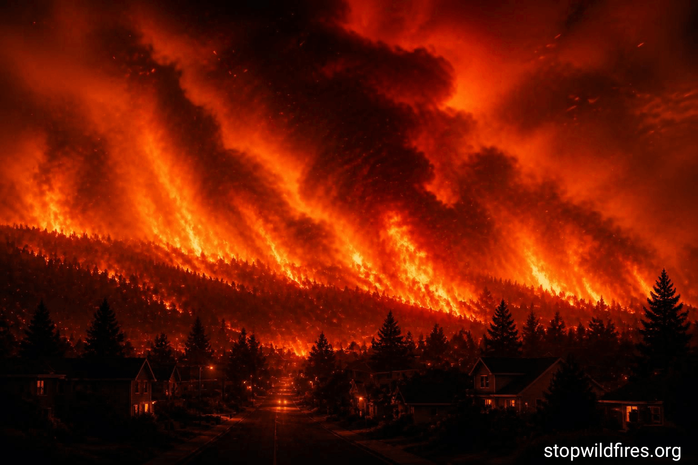
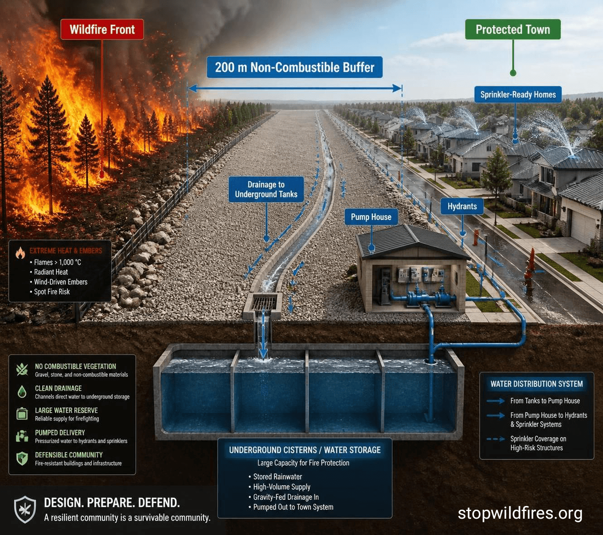
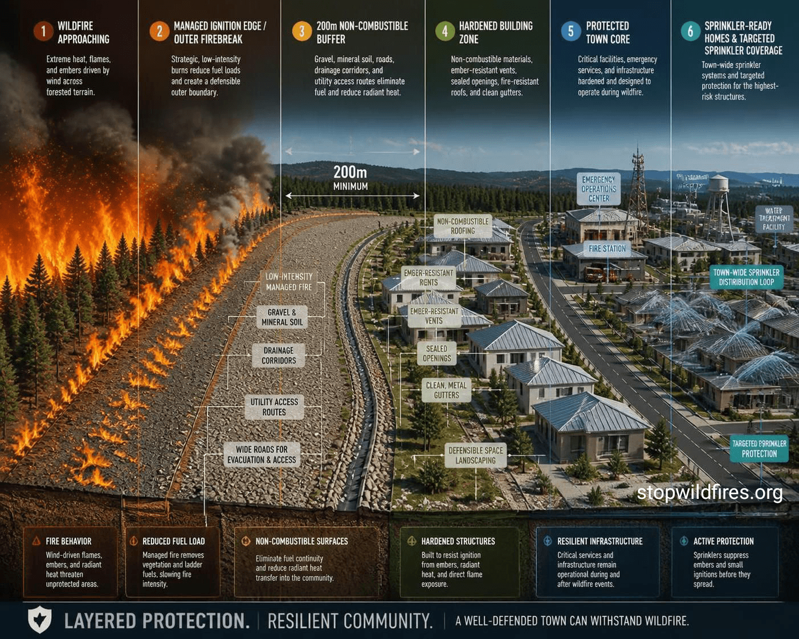

Wildfires are growing more intense due to hotter temperatures, drought, and longer fire seasons. Communities need better planning, stronger protection, and practical resilience.
This site explores practical ways to stop wildfires from reaching towns and cities.
Wildfires are becoming more destructive across North America and Europe. In Canada, large fire seasons have affected multiple provinces and territories. In Europe, repeated heatwaves and dry conditions have increased wildfire danger in countries such as France and Spain. As demand for firefighting aircraft and emergency response grows, communities need protection strategies that go beyond suppression alone.
That is why wildfire planning, ember-resistant buildings, firebreaks, drainage systems, water storage, and defensible town design are becoming essential parts of modern wildfire resilience.
This concept shows a layered defense model for towns and cities: a fire front, a non-combustible buffer zone, drainage channels leading to underground tanks, a pump house, and a protected community beyond.


Gravel, stone, drainage channels, and service access help reduce ignition risk.
Runoff is directed into underground holding tanks or cisterns to support firefighting systems.
Fire-safe buildings, hydrants, and sprinkler-ready homes improve town resilience.
Wildfire resilience means designing communities to better withstand fire, reduce damage, and recover faster.
Buffers, fire-safe buildings, drainage systems, water storage, and good emergency planning all help reduce risk.
Planning ahead gives communities more time to prepare, defend critical infrastructure, and protect lives.
If you’re a town planner, architect, fire professional, researcher, community group, government member, or simply someone interested in wildfire protection, we’d love your feedback and ideas.
Media inquiries are welcome, and sharing the project helps spread awareness.
Email: admin@stopwildfires.org
Text, diagrams, and other materials on this site are copyrighted. You may share or repost the content for non-commercial purposes with attribution and a link back to the site. Permission is required for commercial use, adaptation, or publishing modified versions.
© 2026 stopwildfires.org All rights reserved.
If you’d like to help support this website and project, donations are welcome.